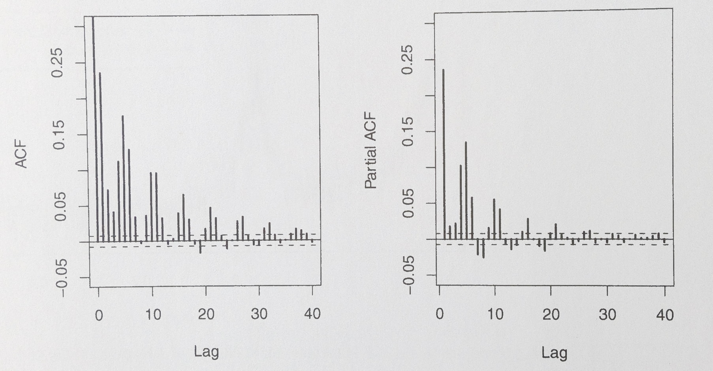

Time Series Analysis
Terms:
- autocorrelation — description of how a time series correlates with itself at a certain lag time
- correlogram — plot of the autocorrelation function
- stationarity — the property of not having any statistical difference between arbitrary times – includes both constant white noise and e.g. a constant sine wave
- differencing — taking the difference between consecutive points in a time series to increase stationarity
- power spectrum — Fourier trasnform of the ACF
- periodogram — plot of the power spectrum
R Functions:
- acf(ts), pacf(ts)
- forecast{ndiffs(ts)}
- diff(ts,differences=d)
- tseries{arma(ts,order=(p,q))}
- forecast{Arima(ts,order=(p,d,q)), auto.arima(ts)}
Time Domain Analysis
Smoothing
Many of the methods described in the smoothing section can be applied to evenly spaced time-domain data. One of the most common and simplest methods is the central moving average (CMA), which averages the data over the surrounding j time intervals: \(\hat{X}_{i,CMA}(j)=\frac{1}{j+1}\sum\limits_{k=-j/2}^{j/2}X_{i+k}\).
Autocorrelation
The autocorrelation function (ACF) is the correlation between a function and itself shifted by a lag k. The related partial autocorrelation function (PACF) removes the effect of shorter lags, resulting in a function that doesn't give the autocorrelation, but still shows timescales at which there is autocorrelation.
Stochastic Autoregressive Models
If we want to model a time series which has stochatic noise in it, there are several models we can use. The simplest is a random walk, \(X_i=X_{i-1}+\epsilon_i\), whose mean is zero and whose ACF slowly decreases from 1. Allowing the current point to be dependent on any number of previous points results in the autoregressive (AR) model, where each previous point has some weight associated with it.
The moving average (MA) model instead assigns weights to the previous \(\epsilon\) terms instead of the variable itself. The ARMA model combines AR and MA by adding the two directly, and it can be used to describe a wide range of time series. The model is usually written as \(ARMA(p,q)\), where p describes the number of nonzero AR coeffeicients, and q describes the number of nonzero MA coefficients. This model is stationary, so it is unable to model time series which are nonstationary.
The ARIMA model (I stands for "integrated") treats this problem by differencing the time series d times, until it is stationary, then applying an ARMA model.
Unevenly Spaced Data
Often in astronomy, a time series will not have evenly spaced observations, such as when searching a star's light curve over many months for transiting exoplanets—we can obviously only have observations from when the Earth is not in our way. We then want a way to find the ACF wihtout interpolating our data onto a regular grid as before. One method of doing so is called slot autocorrelation. This method groups lags together into evenly spaced bins, and the ACF is then computed for those bins. As with histograms, a bin width must be chosen without mathematical aid.
Spectral Analysis
Fourier Analysis
Time series can be subjected to Fourier analysis, which gives us the power spectrum. This contains the same information as the ACF, and the two can be derived from each other. The power spectrum can be plotted in a periodogram.
If we want to find some periodicity that's hidden beneath a more dominant periodicity, Fourier analysis can be used to subtract out the dominant sinusoid from the time series, repeating if necessary. This is called iterative pre-whitening.
Unevenly Spaced Data
In astronomy, the Lomb-Scargle periodogram is a favorite for irregularly spaced data. It is essentially a least-squares regression to a sum of sine and cosine waves. A periodogram can also be derived from the slot autocorrelation function.
Non-Fourier Analysis
If a periodic signal is not sinusoidal, periodicity might be more easily found by folding the data, or wrapping the data into a chosen period. The optimal period is found by minimizing the string length, which is the total length between consecutive data points.
Cross-Correlation
If we have multiple variables we're measuring over time, we can meausre how they relate to each other over time with the cross-correlation function, which is a simple extension of the ACF. In fact, the CCF of a time series with itself is exactly the ACF.